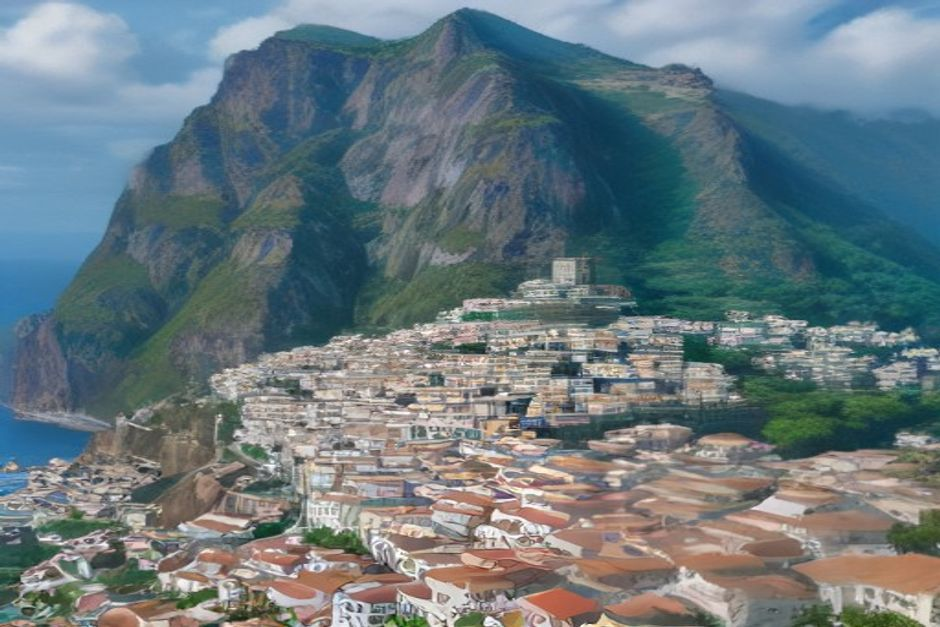
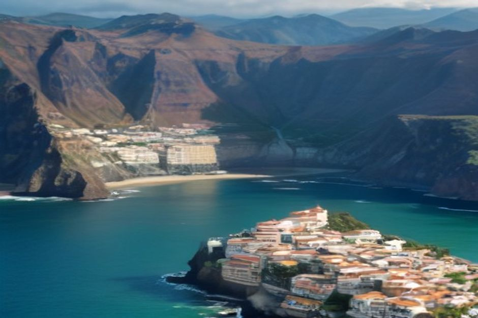

Ist Madeira sicher? Die kurze Antwort: ja, sehr. Wer fragt „ist Madeira gefährlich?“, denkt meist an Kriminalität, doch die spielt hier kaum eine Rolle. Aufpassen müssen Sie bei etwas anderem: bei steilen Bergstraßen, rutschigen Wanderwegen und dem offenen Atlantik. Dieser Ratgeber sagt Ihnen, wo die Grenzen liegen.
Madeira Kriminalität: Wie sicher ist die Insel für Touristen?
Portugal zählt laut Global Peace Index regelmäßig zu den zehn sichersten Ländern der Welt, und Madeira gehört innerhalb Europas zu den ruhigsten Reisezielen. Gewalt gegen Touristen ist selten. In Funchal und den größeren Ferienorten sehen Sie Polizei, die auf Besucher eingestellt ist. Die meisten Urlaube verlaufen ohne jeden Zwischenfall.
Wer sich über Kriminalität auf Madeira informiert, findet also vor allem Entwarnung. Die Risiken, die tatsächlich zu Unfällen führen, haben mit Menschen wenig zu tun. Sie entstehen, wenn Besucher Gelände, Wetter oder Meer unterschätzen.

Kriminalität in Funchal: Taschendiebe, Autoaufbrüche, Abzocke
Gemeldete Kriminalität gegen Touristen ist gering, aber nicht gleich null. Was vorkommt, ist harmlos im Vergleich zu vielen Großstädten:
- Taschendiebstahl: möglich im Gedränge, etwa im Mercado dos Lavradores oder in vollen Straßen Funchals während Festen. Taschen geschlossen halten, das Handy nicht in die Gesäßtasche stecken.
- Autoaufbrüche: Mietwagen auf abgelegenen Parkplätzen an Wanderweg-Ausgangspunkten werden gelegentlich wegen sichtbarer Wertsachen aufgebrochen. Lassen Sie nie Taschen, Kameras oder Dokumente im parkenden Auto liegen.
- Abzocke: selten. Der wahrscheinlichere Ärger ist eine überteuerte Speisekarte in einem Lokal, das sich ganz auf Laufkundschaft eingestellt hat. Werfen Sie vor dem Hinsetzen einen Blick auf die Preise.
Mehr Sorgen als um Ihr Portemonnaie müssen Sie sich um Ihre Schuhe machen. Dazu gleich mehr.
Madeira allein reisen: Auch für Frauen unbedenklich?
Ja. Madeira wird immer wieder als eines der sichersten Ziele Europas für Alleinreisende genannt, auch für Frauen. Die Einheimischen sind es gewohnt, dass Gäste auf eigene Faust zu Fuß, mit dem Bus oder im Mietwagen unterwegs sind.
Die üblichen Regeln einer europäischen Stadt gelten trotzdem:
- Spätabends in Funchal gut beleuchtete Straßen wählen.
- In den belebten Gassen der Zona Velha Taschen geschlossen halten.
- Nach Einbruch der Dunkelheit lizenzierte Taxis oder Fahrdienst-Apps nutzen, keine unmarkierten Autos.
Viele Alleinreisende berichten übrigens, dass sie sich vor einem nassen Klippenpfad mehr in Acht nehmen als vor einem nächtlichen Spaziergang.
Autofahren auf Madeira: Wie gefährlich sind die Straßen?
Für aufmerksame, geübte Fahrer ist Autofahren auf Madeira in Ordnung. Trotzdem sind die Straßen die größte alltägliche Gefahr der Insel, und zwar mit Abstand vor der Kriminalität.
Die Schnellstraße VR1, die Funchal mit dem Flughafen und der Westküste verbindet, ist modern und gut ausgebaut. Anders die Nebenstraßen, die ER-Straßen: Sie führen steil in die Berge und an der Nordküste entlang, sind schmal und haben Haarnadelkurven, Tunnel und unübersichtliche Kurven, oft mit einem Abgrund auf einer Seite.
Was Ihnen hilft:
- Kleineres Auto mieten. Auf diesen Straßen ist es tatsächlich leichter zu handhaben als ein großer SUV.
- Rechtsverkehr: Wie in Deutschland, Österreich und der Schweiz fahren Sie auch in Portugal rechts. Das ist also keine Umstellung.
- Unbekannte Bergstrecken nach Einbruch der Dunkelheit oder bei Nebel meiden.
- Auf Radfahrer und Motorroller in blinden Kurven achten.
- Mehr Zeit einplanen. Die Fahrzeit laut Karte ist in der Praxis fast immer länger, als die Entfernung vermuten lässt.
Wer sich das Steuer in den Bergen nicht zutraut, fährt mit Taxi, Bus oder gebuchter Tour und verpasst kaum etwas.
Wandern und Levadas: Hier steckt das eigentliche Risiko
Wenn jemand auf Madeira verunglückt, dann meist beim Wandern. Einige Abschnitte sollten Sie ernster nehmen, als es die Prospektfotos nahelegen. Dazu zählen exponierte Stücke der PR1 hinauf zum Pico do Arieiro und manche der älteren Levada-Pfade. Sie führen an ungesicherten Klippenrändern entlang, durch unbeleuchtete Tunnel oder über Untergrund, der nach Regen rutschig und gefährlich wird.
So gehen Sie auf Nummer sicher:
- Bleiben Sie auf den offiziellen, markierten PR-Wegen.
- Prüfen Sie vor der Tour das Buchungssystem SIMplifica. Dort sehen Sie auch Sperrungen nach Erdrutschen oder Sturmschäden.
- Packen Sie eine Stirnlampe für die Tunnelabschnitte ein.
- Tragen Sie feste Schuhe mit gutem Profil, keine Sandalen.
- Kehren Sie um, wenn der Weg nasser oder schmaler ist als erwartet.
- Gehen Sie die exponierten Routen nicht allein.
Familienfreundliche Wege wie der von Ribeiro Frio nach Balcões kennen diese Risiken nicht.
Ist das Meer auf Madeira gefährlich? Baden, Strömung, Dünung
Das hängt vom Ort und vom Tag ab. Madeira hat so gut wie keine natürlichen Sandstrände. Man badet in Felsbuchten und vulkanischen Naturbecken, und dort können Dünung, Strömungen und plötzliche Wellen an unbewachten Stellen wirklich gefährlich werden, besonders im Winter und nach Atlantikstürmen.
Am sichersten sind Strände mit Rettungsschwimmern wie Praia Formosa und Calheta. Flaggen zeigen dort die Verhältnisse des Tages. Im Sommer sind die offenen Buchten an der Südküste ruhiger und klarer. Ob eine Bucht an einem bestimmten Tag geschützt liegt, kann man vom Ufer aus aber schlecht beurteilen.
Deshalb ist der Weg über das Wasser eine gute Lösung: Bei einer privaten Bootstour mit Chifbay hält der Skipper erst zum Schwimmen an, wenn er geprüft hat, dass die Bucht geschützt ist und die Bedingungen stimmen. Es gibt keinen starren Zeitplan, der das Meer ignoriert.
Wetter, Starkregen, Erdbeben und Vulkan
Ein Vulkanrisiko besteht nicht nennenswert. Madeira ist eine erloschene Vulkaninsel ohne bekannte Ausbrüche in historischer Zeit und liegt in einem vergleichsweise stabilen Teil des mittleren Atlantiks. Erdbeben sind selten und schwach.
Ernster zu nehmen ist Starkregen. Heftige Stürme haben auf der Insel schon Sturzfluten und Erdrutsche ausgelöst, am folgenschwersten im Februar 2010. Schauen Sie während Ihres Aufenthalts auf die Warnungen des IPMA, des portugiesischen Wetterdienstes. Steile, unbefestigte Wege meiden Sie während und direkt nach starkem Regen.

Die Küste sicher vom Boot aus erleben
Wer die Südküste sehen möchte, ohne sich Gedanken über Parkplätze, Serpentinen und Strömungen zu machen, ist auf dem Wasser gut aufgehoben. Chifbay fährt ab der Marina do Funchal, Steg C. Das ganze Boot gehört nur Ihrer Gruppe, bis zu 5 Gäste, mit zwei lizenzierten Skippern aus Madeira auf einer Karnic R8S von 2026.
- Tagestour (Start 10:00 oder 14:00): 2 Std. 30 Min. bis Ribeira Brava für 500 €, oder 3 Std. weiter bis Ponta do Sol für 600 €. Mit Câmara de Lobos, Cabo Girão sowie Schwimmen und Paddleboards an der Fajã dos Padres, wenn die Verhältnisse es zulassen.
- Sonnenuntergangsfahrt (Start 1 Std. 15 Min. vor Sonnenuntergang, das ganze Jahr): 2 Std. bis Cabo Girão für 400 €, oder 2 Std. 30 Min. bis Ribeira Brava für 500 €. Ohne Badestopp.
Die Preise gelten für das ganze Boot, nicht pro Person. Essen und Getränke an Bord, ein 360°-Video mit der Insta360, Drohnenaufnahmen (wetterabhängig) und Fotos mit einer richtigen Kamera sind inbegriffen. Bis 24 Stunden vor Abfahrt können Sie kostenlos stornieren. Das ist praktisch, falls das Wetter doch nicht mitspielt. Mehr dazu finden Sie in den praktischen Infos, einen Überblick gibt Bootstouren auf Madeira.
Checkliste: Sicher auf Madeira unterwegs
- Vor Wanderungen oder Bootstouren die IPMA-Wetterwarnungen prüfen.
- Beliebte Wege vorab über SIMplifica buchen.
- Auf jedem Levada-Spaziergang feste Schuhe tragen.
- Nie an einer unbewachten Bucht schwimmen, ohne die Bedingungen zu kennen.
- Auto abschließen und Wertsachen an Wanderweg-Ausgangspunkten außer Sicht halten.
- Eine Reiseversicherung wählen, die Wandern und Wassersport wirklich abdeckt.
- Die 112, die europaweite Notrufnummer, schon vor der Landung im Handy speichern.
Nichts davon ist typisch Madeira. Es ist dieselbe Sorgfalt, die jedes bergige Küstenziel belohnt. Sie entscheidet aber darüber, ob die Reise so verläuft wie geplant.
Gefährlich war auf Madeira nie der Mensch. Gefährlich ist, eine Bergstraße, einen nassen Pfad oder die Atlantikdünung zu unterschätzen.
Wer Gelände und Meer ernst nimmt, bekommt eine der sichersten und lohnendsten Inselreisen Europas: Klippen, Wald und Küste, für die sich ein bisschen Vorsicht lohnt.